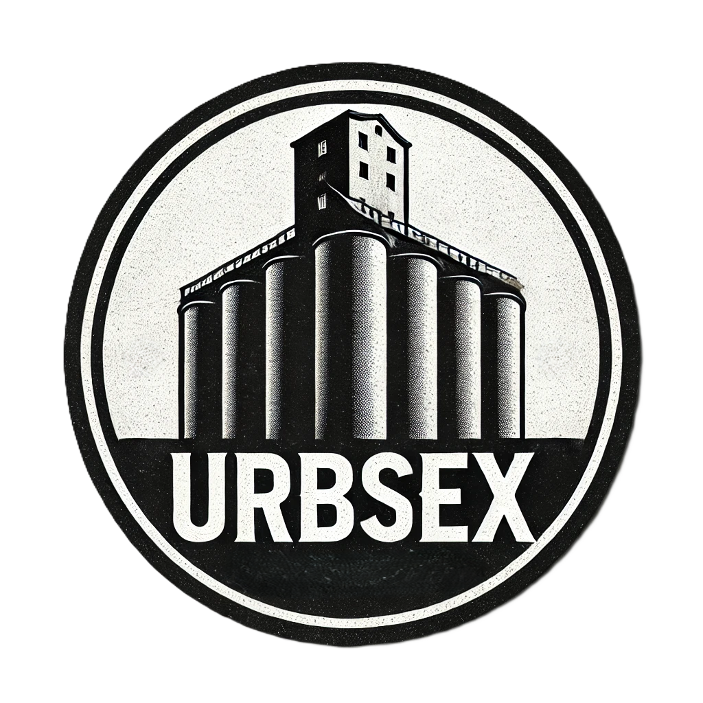

Urban exploration is the exploration of manmade structures, usually abandoned ruins or hidden components of the manmade environment.

URBSEX was created with a passion for urban exploration and a mission to uncover hidden gems within forgotten buildings. Our team is dedicated to discovering new urbex locations and providing detailed insights into the history and stories behind these structures. We aim to inspire and equip fellow adventurers with the knowledge and advice they need for safe and rewarding explorations. Whether you're a seasoned urban explorer or just starting out, URBSEX is here to guide you through the fascinating world of abandoned architecture.